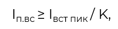

3/10
Условия выбора номинальных токов плавких вставок предохранителей
При выборе номинальных токов плавких вставок предохранителей и уставок для аппаратов защиты необходимо выполнять условия:
Условие 1: Номинальный ток электроприемника должен быть не больше номинального тока расцепителя или плавкой вставки.
Условие 2: Электроприемник не должен отключаться аппаратом защиты при нормальных эксплуатационных перегрузках. Для обеспечения этого необходимо выполнение следующих соотношений:
Номинальный ток плавкой вставки предохранителя должен быть не меньше:

где К – коэффициент. При малой длительности разгона (до 5 сек) и небольшой частоте пусков, К равен 2,5. При длительном времени разгона и большой частоте пусков К может составлять от 1,6 до 2,5.
Уставка электромагнитного расцепителя автоматических выключателей должна быть проверена по условиям отстройки от пусковых токов.
Уставка теплового расцепителя должна быть проверена по время-токовой характеристике на время срабатывания в зоне перегрузки.
Условие 3: Должны быть проверены на избирательность отключения уставки защитных аппаратов, то есть при каждом нарушении нормального режима отключается только поврежденный участок, а защитные аппараты в высших звеньях сети не срабатывали. Проверка производится по время-токовым характеристикам.
При токах, превышающих пусковые, сначала должен отключаться предохранитель или автомат, а только после этого магнитный пускатель (или контактор). Для этого должно быть соблюдено условие: tпред(авт) < (tсвз х K) / Kзап,
tпред(авт) – время срабатывания предохранителя (автоматического выключателя) по время-токовой характеристике,
К – коэффициент, равный 1,15 и учитывающий отклонение от собственного времени пускателя,
tсвз – собственное время магнитного пускателя (или контактора),
Kзап – коэффициент запаса, равный 1,5.
Выбор тока отсечки
При возникновении короткого замыкания, электродвигатель должен немедленно отключаться. Отключение происходит с помощью мгновенной отсечки реле. Выбор величины тока отсечки iотс производят по значению пускового тока электродвигателя, который вычисляется по формуле:

где Iпик – пиковый (пусковой) ток электродвигателя,
Kп – кратность пускового тока электродвигателя. Коэффициент Kзап равен 1.3.
Проверка на устойчивость аппаратов защиты при токах короткого замыкания
Для аппаратов защиты устойчивость при коротких замыканиях указана в каталогах и информациях заводов. Это позволяет проверить ее путем сравнения с токами короткого замыкания в точках установки аппаратов.